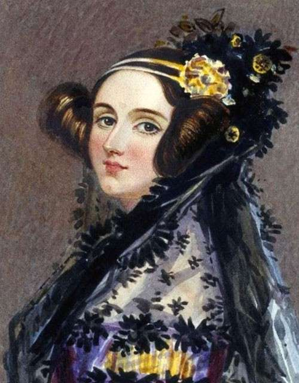

Ada Lovelace
Augusta Ada Byron King nasceu em Byrion, Londres, no dia 10 de
dezembro de 1815, Lovelace foi a única filha legítima do famoso poeta romantico Lord Byron e sua
esposa Baronesa Byron. Conhecida como Ada Lovelace - a matemática que criou o primeiro
algoritmo para ser processado por uma máquina, sendo a primeira programadora da história.
Sim, Lovelace foi a primeira pessoa programadora de todos os tempos, e não apenas a primeira
mulher a escrever um código. Ela traduzia textos de Luigi Menabrea, um
matemático italiano, sobre as ferramentas analíticas usadas por
Charles Babbage, um matemático inglês. Esse trabalho resultou no que
para muitos especialistas, é considerado o primeiro algoritmo da
história.
|
 |